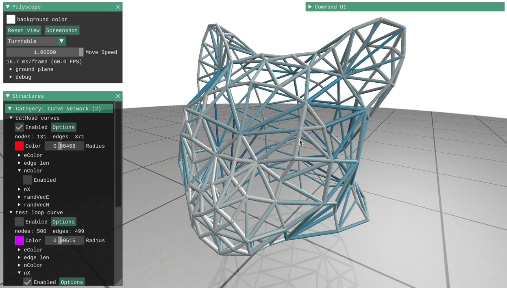

Curve Networks¶
Curve networks are collections of nodes sitting in space, connected by edges. In addition to displaying the nodes and edges of the network itself, Polyscope can show any number of scalar, vector, or color quantities associated with the nodes or edges of the network.
Try clicking on a node or edge to see the data associated with that point!

Registering a curve network¶
Curve network structures can be registered with Polyscope by passing the node position and edge indices. There are also two helpers for constructing lines and loops which only require the node locations and automatically build connectivity.
As usual in Polyscope, the data adaptors allow these functions to accept a wide variety of data types as input– any nodes which are essentially a list of vectors and any edges which are a list of index tuples will work. The std::vector<> types in the example below are just one possibility.
Example: add a curve network
#include "polyscope/curve_network.h"
polyscope::init();
std::vector<glm::vec3> nodes = /* some nodes */;
std::vector<std::array<size_t, 2>> edges = /* edges between nodes */;
// Add the curve network
polyscope::registerCurveNetwork("my network", nodes, edges);
// visualize!
polyscope::show();
Convenience adders for common cases
Rather than passing a vector of edge indices, there are also built-in helpers for common cases of connectivity, like a single continuous sequential line or loop, or a collection of line segments. To use them, call the alternate adders such as registerCurveNetworkLine("name", nodes), which do not require a vector of edge indices.
lineThe nodes will be connected together sequentially, forming a single curveloopThe nodes will be connected together sequentially, including the last to the first, to form a closed loopsegmentsThe2Nnodes will be connected to form a set ofNline segments, interleaved as in[start_0 end_0 start_1 end_1 ...]
CurveNetwork* polyscope::registerCurveNetwork(std::string name, const P& nodes, const E& edges)
Add a new curve network to polyscope
-
nodesis the array of 3D point locations. The type should be adaptable to an array offloat-valued 3-vectors. The length will be the number of nodes. -
edgesis the array of edges, each of which is a pair of 0-based node indices node. The type should be adaptable to an array ofsize_t-valued 2-vectors. The length will be the number of edges.
Note: the inner vector type of the nodes input must be 3D dimensional, or you risk compiler errors, segfaults, or worse. If you want to register a 2D curve network, registerCurveNetwork2D exists with the same signature. See 2D data.
CurveNetwork* polyscope::registerCurveNetworkLine(std::string name, const P& nodes)
Add a new curve network to Polyscope from a polyline of points. The connectivity will be automatically created to connect the points in order.
nodesis the array of 3D point locations. The type should be adaptable to an array offloat-valued 3-vectors. The length will be the number of nodes.
Note: the inner vector type of the points input must be 3D dimensional, or you risk compiler errors, segfaults, or worse. If you want to register a 2D curve network, registerCurveNetworkLine2D exists with the same signature. See 2D data.
CurveNetwork* polyscope::registerCurveNetworkLoop(std::string name, const P& nodes)
Add a new curve network to Polyscope from a closed loop of points. The connectivity will be automatically created to connect the points in order.
nodesis the array of 3D point locations. The type should be adaptable to an array offloat-valued 3-vectors. The length will be the number of nodes.
Note: the inner vector type of the points input must be 3D dimensional, or you risk compiler errors, segfaults, or worse. If you want to register a 2D curve network, registerCurveNetworkLoop2D exists with the same signature. See 2D data.
CurveNetwork* polyscope::registerCurveNetworkSegments(std::string name, const P& nodes)
Add a new curve network to Polyscope from an interleaved set of lines. If 2N nodes are passed, then N line segments will be created, connecting the points in an interleaved order like [start_0 end_0 start_1 end_1 ...].
nodesis the array of 3D point locations. The type should be adaptable to an array offloat-valued 3-vectors. The length will be the number of nodes.
Note: the inner vector type of the points input must be 3D dimensional, or you risk compiler errors, segfaults, or worse. If you want to register a 2D curve network, registerCurveNetworkLoop2D exists with the same signature. See 2D data.
Selection / Picking¶
“Picking” refers to selecting and inspecting elements by clicking on the object in the scene. As with other structures, you can call interpretPickResult() to get additional info about a click. See the overview of Selection / Picking for general information.
struct CurveNetworkPickResult {
CurveNetworkElement elementType; // which kind of element did we click (enum values: {NODE, EDGE})
int64_t index; // index of the clicked element
float tEdge = -1; // if the pick is an edge, the t-value in [0,1] along the edge
};
CurveNetworkPickResult CurveNetwork::interpretPickResult(PickResult result)
Get additional information about a click.
Updating a curve network¶
The locations of the nodes in a curve network can be updated with the member function updateNodePositions(newPositions). All quantities will be preserved. Changing the connectivity or number of nodes/edges is not supported, you will need to register a new curve network (perhaps with the same name to overwrite).
void CurveNetwork::updateNodePositions(const V& newPositions)
Update the node positions in a curve network structure.
newPositionsis the vector array of 3D node locations. The type should be adaptable to an array offloat-valued 3-vectors. The length must be equal to the current number of nodes.
Note: updatePointPositions2D exists with the same signature. See 2D data.
Adjusting the node and edge radius¶
Set the radius of the nodes and edges in the curve network with CurveNetwork::setRadius(newRad). By default, the radius is a relative value which gets scaled by the content in the scene, so for example a default of 0.02 will always be a reasonable size no matter what the scale of the content in your scene is. Or, set isRelative=false to set an absolute radius in world units.
void CurveNetwork::setRadius(double newVal, bool isRelative=true)
Update the radius for the nodes and edges in the curve network.
By default the radius is interpreted as a relative value, setting isRelative=false will treat is as an absolute length in world units.
To set a variable radius which is different for each node and/or edge in the curve network, see the variable radius page.
Options¶
See structure management for options common to all structures such as enabling/disabling, transforms, and transparency.
| Parameter | Meaning | Getter | Setter | Persistent? |
|---|---|---|---|---|
| radius | size of rendered points and lines | double getRadius() |
setRadius(double newVal, bool isRelative=true) |
yes |
| color | default color the curve network | glm::vec3 getColor |
setColor(glm::vec3 newVal) |
yes |
| material | what material to use | std::string getMaterial() |
setMaterial(std::string name) |
yes |
(All setters return this to support chaining. Structure options return a generic structure pointer, so chain them last.)